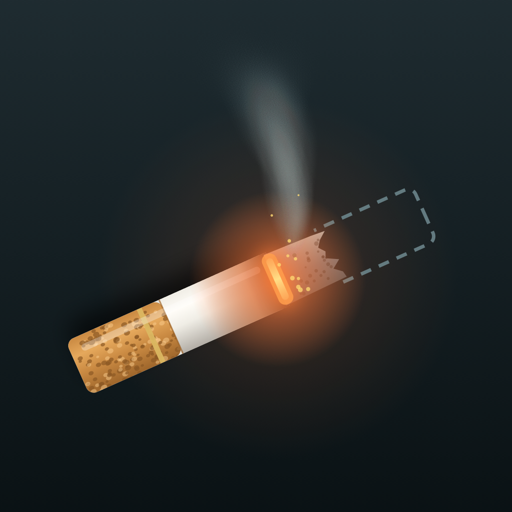

되감는 담배
금연한 만큼 다시 길어지는 담배
되감는 담배는 금연한 시간이 쌓일수록 꽁초만 남았던 담배가 다시 길어지는 금연 타이머입니다. 20분부터 10년 이후까지 12단계 목표를 지날 때마다 담배 한 개비가 되돌아옵니다.
자주 묻는 질문
- 위젯에 "예시 · 앱에서 시작하세요"가 보여요.
- 앱의 금연 탭에서 "금연 시작하기"를 누르면 위젯이 내 기록으로 바뀝니다.
- 앱을 늦게 켜서 금연 시작 시각이 실제와 달라요.
- 기록 탭의 "지금" 카드에서 "시각 수정"을 누르고, 마지막 담배를 피운 날짜와 시각으로 맞춰 주세요. 그 시각부터 금연 시간을 셉니다.
- 홈 화면이나 StandBy에 위젯을 크게 띄우고 싶어요.
- 홈 화면의 빈 곳을 길게 누르고 편집 → 위젯 추가에서 "되감는 담배"를 고르세요. 충전하면서 iPhone을 가로로 눕히면 StandBy 화면에도 넣을 수 있습니다.
- 잠금 화면에 크게 띄우고 싶어요.
- 설정 탭에서 "잠금 화면에 실시간 표시"를 켜 두면, 앱을 열 때마다 잠금 화면과 다이내믹 아일랜드에 금연 시간이 나타납니다. iOS 정책상 최대 12시간 동안 보입니다.
- Apple Watch 시계 화면에 넣으려면요?
- Watch 앱을 한 번 연 뒤, 시계 화면을 길게 누르고 편집 → 컴플리케이션에서 "되감는 담배"를 고르세요. 모듈러 듀오처럼 넓은 칸이 있는 시계 화면에서 금연 기간이 가장 크게 보입니다.
- 다시 피웠어요.
- 금연 탭에서 "피웠어요"를 누르면 이번 금연이 기록 탭에 남고, 그때부터 담배가 내 흡연량 속도로 타들어 갑니다. 준비되면 "다시 금연 시작"을 누르세요. 다시 시작해도 괜찮습니다.
- 기록은 어디에 저장되나요?
- 내 iPhone과 Apple Watch에만 저장되며 어디로도 보내지 않습니다. 자세한 내용은 개인정보 처리방침을 보세요.
금연이 힘들 때
보건복지부 금연상담전화 1544-9030에서 무료로 상담을 받을 수 있습니다.
문의
오류 신고나 제안은 이메일로 보내 주세요.
saejinpark951210@gmail.com